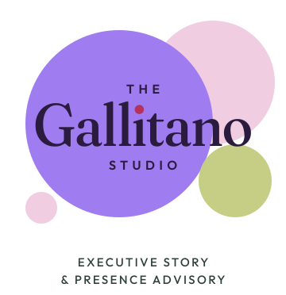

About Angela Gallitano
I learned to read a room long before I ever sat in a boardroom.
Most people spend their careers learning how to perform. I spent mine learning to read what’s underneath the performance. What isn’t being said. Who the room is actually waiting on. The story sitting behind the title.
By the time I was across the table from CHROs and executive teams, I didn’t see titles. I saw people doing their very best inside systems that almost never asked who they were.
And people could tell. So they told me things.
I didn’t take the straight line. I wasn’t handed a script I wanted.
Three colleges. Seven majors. On paper it looks like I couldn’t pick. That’s not what was happening. I was chasing one question from every angle I could find: how do people actually work?
Linguistics. Nutrition sciences. Cultural anthropology. Pre-med. Even Ancient Greek. Zoology won. (It has been far more useful in boardrooms than anyone warned me.)
I wasn’t looking for a safe track. I was looking for what makes people open up, and what finally gets them to move.
The real story is never on the org chart.
For more than ten years I sat with executives inside some of the biggest companies in the world. At Gartner, that meant CHROs and HR executives at some of the largest organizations in the country: Fortune 500 manufacturers and logistics companies, major health systems and health plans. Together we worked through AI strategy, CEO succession and board presentations.
It was never really about selling. It was about listening. Asking the question nobody else in the room was asking. Figuring out which executive everyone else was quietly following, and how leaders were actually talked about when they weren’t in the room.
People told me things. The real story. (And I mean the REAL story.) I never used any of it against anyone. I shaped my guidance to each situation, went looking for other perspectives, and kept every client’s name out of it. That’s how trust works at that level. I earn it, and then I protect it.
Here’s how I know it worked. Customers tell me they’re thinking about leaving before they tell their boss. Executives call me about the conversation they can’t have inside their own company. People who are supposed to see me as the vendor bring me the question underneath the title instead. That doesn’t happen because I’m good at selling. It happens because they’ve watched what I do with what they tell me.
Those executives and their leaders still reach out to this day. And somewhere in there I noticed I’d been helping everyone else write their story. Everyone except me.
This work existed long before it had a name.
For years, people pulled me aside. A founder trying to explain what their company actually does. An executive rewriting their story before a board meeting. A leader who couldn’t say the thing out loud yet.
350+ rooms. 125+ executives one to one. The US, Italy, the UK, Hong Kong and beyond. I did it after sessions, in hallways, on calls that ran long. It lived inside other companies’ programs, under other names. I’m proud of that work, and I still am. It just never had my name on it.
At LinkedIn
Nominated as one of three Rock Your Profile leaders worldwide. I oversaw and trained the global program.
It’s still happening. A few months into a new company, I was the one presenting to the whole org. Colleagues told me they were using the ideas we built together to help their own teams. Not long ago I stopped a negotiation cold, because the person across the table couldn’t actually say yes. I asked for thirty minutes with the one who could. Thirty minutes later, we had a commitment. That’s the whole method. Find who the room is waiting on. Ask.
I keep a file of what people say about me when I’m not in the room. It’s the first thing I ask every client to start.
I earn trust the only way I know how. I’m endlessly curious, and I mean it. I believe everyone has a story, and I have never met an executive whose real one wasn’t better than their bio.
The Gallitano Studio isn’t an experiment. People kept asking. So I finally gave the work a name, and put mine on it.
Built for leaders who are done performing.
At some point the title, the leaderboard and the applause stop being enough. You’ve gotten very good at a game you’re not sure you want to keep playing.
That’s usually when people call me. We find the story underneath, shape it in your own words, and make sure the leader people meet online and in the room is the one you actually are.
Stop auditioning. Be known for who you actually are.
- 350+rooms since 2020
- 125+executives one to one
- 100sessions in five months
- US, Italy, UK, Hong Kongand beyond
I earn trust, and then I protect it.
I never name clients.
The studio brand board
Garden Party.
The Cluster

One line
Palette
- Linen
- Seaweed
- Lavender
- Deep lavender
- Pistachio
- Candyfloss
- Aubergine
- Raspberry
Display
Fraunces italic
Headlines, and the one accent word.
Body
Outfit
Everything you read, and every button.
The Known For mark
Known For
Known For
Photo direction
Natural daylight, fresh flowers or greenery, linen or cream surfaces.
No one can write your leadership story for you. So we write it together.
Then we make sure it’s found in the right places, at the moments that matter.
Tell me where you’re headed. I’ll tell you where I’d start.